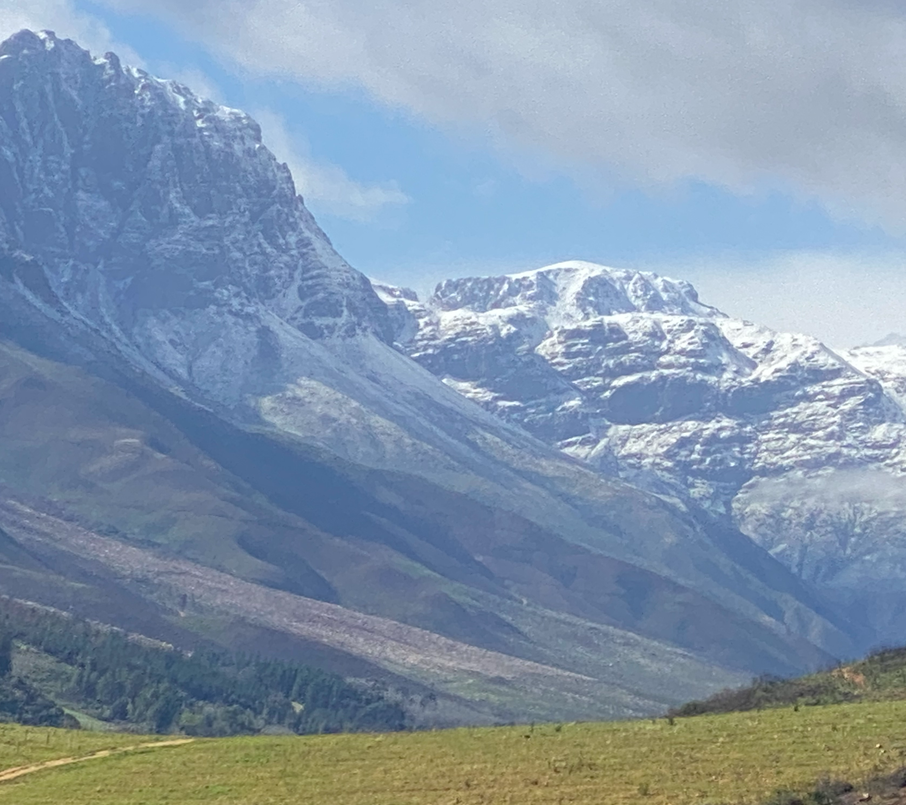

If I were to lift my eyes to the mountains
and dare to ponder where my help will come;
or like Elijah in a cave perhaps
waiting for a guiding hand;
I will still find in wind,
or earth, or blazing fire,
answers to my searching heart -
but the stillness...
the silence, that embraces all:
Hari Om Tat Sat